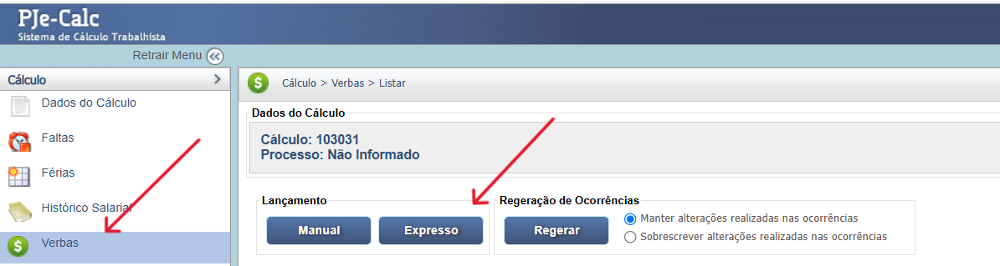
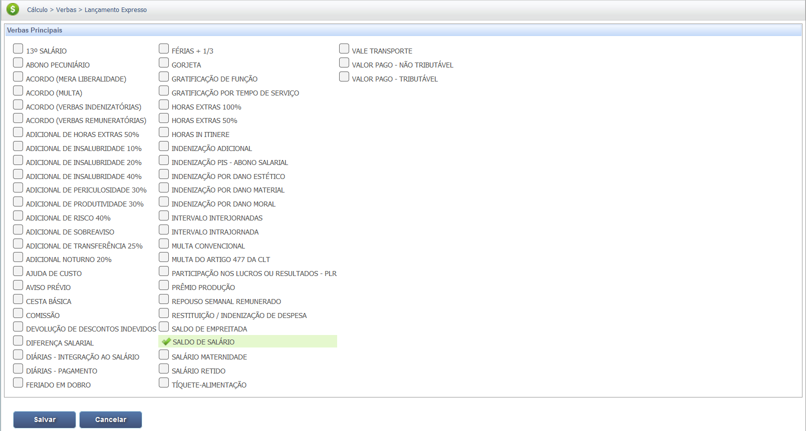
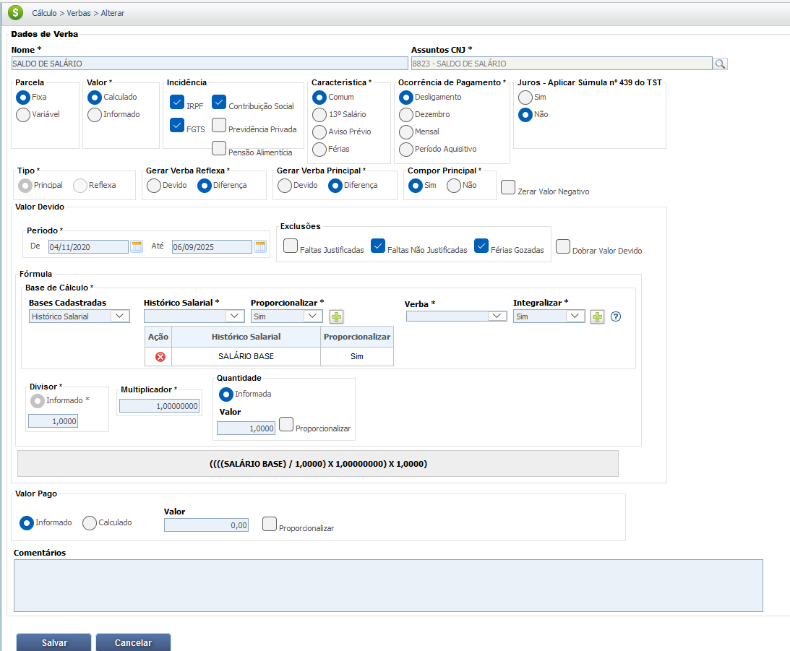
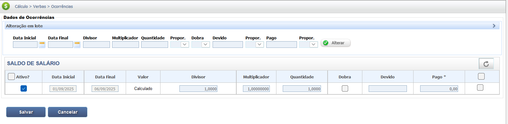

Saldo de Salário
O Saldo de Salário é o valor correspondente aos dias trabalhados pelo empregado no mês em que ocorre a rescisão do contrato de trabalho. É uma das verbas rescisórias devidas ao empregado, independentemente do motivo do desligamento (pedido de demissão, demissão sem justa causa, ou outras).
Trata-se do Salário Base Proporcional, também conhecido como Salário Fixo ou Salário Contratual, sendo o valor estipulado em contrato de trabalho (e anotado na Carteira de Trabalho) que o empregado recebe pela prestação de seus serviços, antes da aplicação de quaisquer adicionais, bônus, gratificações ou comissões. Em essência, ele é a quantia fixa e invariável que serve como ponto de partida (a "base") para todos os cálculos da remuneração e das obrigações trabalhistas.
O que Compõe o Salário Base
O Salário Base é composto primariamente por um valor monetário fixo, determinado por:
- Negociação Contratual: É o valor acordado entre o empregado e o empregador no momento da contratação.
- Piso Salarial: O valor negociado não pode ser inferior ao:
- Salário Mínimo Nacional ou
- Piso Salarial Estadual ou
- Piso Salarial da Categoria estabelecido em Convenção ou Acordo Coletivo de Trabalho.
O ÚNICO COMPONENTE DO SALÁRIO BASE:
O Salário Base é o valor fixo estipulado no contrato de trabalho (e anotado na carteira de trabalho) como contrapartida direta pela prestação do serviço. É o valor nominal, constante e invariável que o empregado tem direito a receber mensalmente.
O que NÃO Compõe o Salário Base (Mas compõe a Remuneração Total)
É crucial distinguir o Salário Base da Remuneração (Salário Bruto). A Remuneração é o Salário Base mais todas as outras parcelas devidas ao empregado. Portanto, o Salário Base não inclui as seguintes verbas, que são calculadas à parte:
| Parcelas de Natureza Salarial | Descrição |
|---|---|
| Horas Extras | Adicional pelo tempo trabalhado além da jornada normal. |
| Adicionais de Insalubridade e Periculosidade | Valores devidos por trabalho em condições nocivas ou perigosas. |
| Adicional Noturno | Valor pago pelo trabalho realizado em horário noturno. |
| Comissões e Gorjetas | Valores variáveis ligados a vendas, desempenho ou serviço. |
| DSR e Feriados sobre Variáveis | O reflexo (cálculo) do DSR e dos feriados sobre as verbas variáveis (horas extras, comissões). |
DSR e Feriados: Distinção entre Mensalistas e Horistas
O DSR (Descanso Semanal Remunerado) e os Feriados não são adicionais ao Salário Base para quem é mensalista. Eles são um direito que está embutido/incluído no cálculo do Salário Base para os trabalhadores que recebem por mês.
- Mensalistas (Salário Fixo): O valor do Salário Base já remunera os 30 dias do mês, incluindo os dias trabalhados, os DSRs e os feriados. Para o mensalista, geralmente não há uma rubrica de "DSR" ou "Feriado" separada na folha de pagamento sobre o Salário Base.
- Horistas e Comissionistas: Nesses casos, o DSR e os Feriados são calculados separadamente, de forma proporcional ao valor que eles produziram (horas ou vendas) e são adicionados ao pagamento, compondo a Remuneração Bruta.
- Reflexo de Verbas Variáveis: O DSR e Feriados aparecem como cálculo adicional, mesmo para mensalistas, quando incidem sobre verbas variáveis (Horas Extras, Adicional Noturno, Comissões). Esse "Reflexo do DSR e Feriados" integra a Remuneração Bruta, mas não o Salário Base.
Importância do Salário Base
O Salário Base é o principal referencial para:
- Cálculo de Verbas: É usado como base para calcular o valor da hora de trabalho, férias, 13º salário, aviso prévio e, em muitos casos, o valor das horas extras e outros adicionais.
- Segurança e Estabilidade: Oferece ao empregado uma renda mínima previsível e estável.
Base Legal e Jurisprudência
O direito ao recebimento ao Saldo de Salário tem por base a legislação a seguir:
Fontes Normativas
Consolidação das Leis do Trabalho (CLT):
- Art. 64:
O salário-hora normal, no caso de empregado mensalista, será obtido dividindo-se o salário mensal correspondente à duração do trabalho, a que se refere o art. 58, por 30 (trinta) vezes o número de horas dessa duração.
- Parágrafo único do Art. 64:
Sendo o número de dias inferior a 30 (trinta), adotar-se-á para o cálculo, em lugar desse número, o de dias de trabalho por mês.
- Art. 65:
No caso do empregado diarista, o salário-hora normal será obtido dividindo-se o salário diário correspondente à duração do trabalho, estabelecido no art. 58, pelo número de horas de efetivo trabalho.
Jurisprudência
Súmula 264, TST:
Na rescisão contratual, o empregado tem direito ao salário dos dias trabalhados no mês da dispensa, calculado à base do número de dias efetivamente trabalhados.
Base de Cálculo e Deduções
IMPORTANTE: O Saldo de Salário deve integrar o valor da Remuneração Total (Salário-Base + Adicionais + H. Extras + Gratificações ) para fins de cálculo das deduções obrigatórias fiscais e para formação da base de cálculo das Verbas Reflexas
Definição da Base de Cálculo
A base de cálculo é o montante sobre o qual incidirão os cálculos para apurar o valor devido.
Para calcular o Saldo de Salário, considera-se o salário mensal e a quantidade de dias efetivamente trabalhados no último mês. A base de cálculo é sempre a remuneração integral do empregado.
Composição da Base de Cálculo:
A Base de Cálculo do Saldo de Salário é formada pelo somatório das bases:
- Base Principal: Salário Base Proporcional.
- Bases Adicionais: Não há.
Observação: Destaque-se que Feriados e Descanso Semanal Remunerado (parcelas fixas) já estão incluídos no Salário Base. No entanto, no caso de incidência de verbas variáveis (horas extras, adicional noturno, comissões) há reflexos sobre o DSR e Feriados, que devem ser somados à base principal.
Importante: Saldo de Salário é uma verba separada de outras verbas rescisórias como férias proporcionais, 13º salário proporcional e aviso prévio indenizado.
Cálculo do Salário-Hora (Mensalista)
O Artigo 64 da CLT é usado para determinar o divisor mensal de horas. Embora mencione "30 vezes o número de horas dessa duração", o entendimento consolidado considera a jornada semanal do empregado, sendo o divisor padrão de 220 horas para a jornada de 44 horas semanais.
- Jornada de 44h semanais: O divisor padrão é 220 horas (resultado de 30 dias * 7,33 horas/dia, ou 44 horas/semana * 5 semanas/mês, aproximadamente).
- Jornada de 40h semanais: O divisor é 200 horas.
- Jornada de 36h semanais: O divisor é 180 horas.
Salário-Hora Normal = Salário Mensal / Divisor Horário Padrão
O Divisor Horário Padrão é 220, 200, 180, etc., conforme a jornada de trabalho semanal do empregado.
Cálculo do Salário-Hora (Diarista)
O artigo 65 da CLT define como calcular a hora de trabalho para o empregado que recebe por dia (diarista). Para o diarista, o salário já é fixado por dia. Para encontrar o valor da hora, basta dividir o salário diário pela duração da jornada diária normal (geralmente 8 horas).
Salário-Hora Normal = Salário Diário / Duração Normal do Trabalho Diário
A Duração Normal do Trabalho Diário é, geralmente, de 8 horas (conforme Art. 58 da CLT).
Cálculo do Salário-Dia (Proporcional)
O parágrafo único do artigo 64 da CLT é crucial e gera debates, mas a interpretação atual se volta para a ideia de dias reais do mês em caso de rescisão. A interpretação é de que, se o mês tem menos de 30 dias (como fevereiro), o cálculo deve usar o número de dias real do mês. Por extensão e conforme a Súmula 264 do TST, o cálculo do valor do dia de trabalho para o saldo de salário deve ser:
Valor do Dia de Trabalho = Salário Mensal / Número de Dias do Mês da Rescisão
Saldo de Salário = Valor do Dia de Trabalho x Dias Trabalhados no Mês
Exemplo Prático (Valor Bruto)
O cálculo do saldo de salário é simples e direto, seguindo uma fórmula proporcional aos dias trabalhados no mês da rescisão, utilizando o número de dias reais do mês conforme a interpretação do Art. 64, Parágrafo Único e Súmula 264 do TST.
Um empregado com salário mensal de R$ 3.100,00 foi demitido no dia 15 de janeiro (mês com 31 dias). O cálculo do saldo de salário é:
Saldo de Salário = (R$ 3.100,00 / 31 dias) * 15 dias = R$ 1.500,00
Dessa forma, o valor do saldo de salário devido a este empregado é de R$ 1.500,00.
| Item | Valor |
|---|---|
| Salário Mensal | R$ 3.100,00 |
| Dias no Mês | 31 dias (Janeiro) |
| Dias Trabalhados | 15 dias |
| Saldo de Salário Bruto | R$ 1.500,00 |
Deduções da Base de Cálculo
Deduções Fiscais e Previdenciárias:
O desconto da contribuição para o Instituto Nacional do Seguro Social (INSS) e do Imposto de Renda Retido na Fonte (IRRF) é obrigatório, pois o saldo de salário possui natureza salarial.
Deduções de Valores Pagos (Compensação - Adiantamento):
- Adiantamentos Salariais: Valores antecipados ao empregado no mês da rescisão ou em meses anteriores.
Descontos Autorizados por Lei, Contrato ou Acordo Coletivo:
- Vale-Transporte: Desconto de até 6% do salário básico, caso o empregado tenha optado por receber o benefício e ele tenha sido antecipado.
- Faltas e Atrasos Injustificados: O valor correspondente aos dias ou horas de ausência não justificada no mês da rescisão.
Exemplo Prático (Valor Bruto - Deduções = Valor Líquido)
Considerando o valor do saldo de salário bruto de R$ 1.500,00, e a inclusão dos descontos de adiantamento (R$ 300,00) e Vale-Transporte (R$ 50,00), o cálculo do valor líquido é:
| Item | Valor |
|---|---|
| Saldo de Salário Bruto | R$ 1.500,00 |
| (-) Dedução INSS (R$ 1.500,00 * 7,5%) | R$ 112,50 |
| Base de Cálculo IRPF (1500,00 - 112,50) | R$ 1.387,50 |
| (-) Dedução IRPF (R$ 1.387,50 * 7,5%) | R$ 104,06 |
| (-) Desconto Adiantamento Salarial | R$ 300,00 |
| (-) Desconto Vale-Transporte (6% do Salário Base) | R$ 90,00 |
| Total Deduções (INSS + IRPF + Adiant. + VT) | R$ 606,65 |
| Saldo de Salário Líquido | R$ 893,44 |
Verbas Reflexas
O Saldo de Salário, por representar a remuneração devida pelos dias trabalhados, serve como base de cálculo (ou um indicador da proporcionalidade) para outras verbas rescisórias.
Embora o Saldo de Salário seja a remuneração direta dos dias efetivamente trabalhados, a contagem desses dias é essencial para determinar a proporção de direitos, e seu valor entra no cálculo de verbas como:
| Verbas Reflexas | Relação com o Saldo de Salário |
|---|---|
| 13º Salário Proporcional | O Saldo de Salário determina se o mês da rescisão conta como 1/12 avos (se trabalhado 15 dias ou mais). |
| Férias Proporcionais | A contagem dos dias trabalhados no mês (do Saldo de Salário) é usada para apuração do período aquisitivo. |
| Aviso Prévio Indenizado | O valor do Saldo de Salário (e médias) serve como base de remuneração para o cálculo do aviso. |
| Depósito FGTS (8%) | O valor bruto do Saldo de Salário (incluindo variáveis) é a base de cálculo para o depósito obrigatório de 8%. |
| Multa de 40% do FGTS | O Saldo de Salário (junto com outras verbas salariais) integra a base para o cálculo da multa rescisória. |
Atenção: O Saldo de Salário é uma verba principal. Os reflexos mencionados acima são cálculos que dependem da existência do Saldo de Salário e dos dias trabalhados no mês da rescisão, bem como do seu valor.
Calculadora (Simulação)
Utilize esta ferramenta para calcular o seu saldo de salário de forma rápida e simples, considerando o número real de dias do mês de rescisão.
Cálculo Simples (Bruto)
Lançamento no PJe-Calc
A seguir, confira o passo a passo para o lançamento da verba no PJe-Calc, utilizando a opção "Expresso":
- Acessar Verbas e Escolher Lançamento: No menu de navegação à esquerda, clique na opção Verbas para iniciar o lançamento. Após o comando, será exibida a tela para escolha do Lançamento da Verba. Escolha a opção Expresso. 
- Seleção da Verba: O sistema abrirá as opções de verbas, escolha a verba Saldo de Salário e clique no botão Salvar 
-
Quadro de Verbas e Ações: O sistema exibirá um quadro
com os campos:
- Ações - contendo as opções de configurações da verba selecionada (parâmetros,
ocorrências e
exclusão)

- - Parâmetros da Verba
- - Ocorrências da Verba
- - Excluir
- Verba Principal - verba selecionada para lançamento.
- Verba Reflexa - em que ao clicar no botão Exibir serão listadas todas as verbas reflexas ligadas a Verba Principal.
- Parametrização da Verba: Ao clicar no botão Parâmetros da Verba serão exibidas todas as configurações necessárias para a parametrização da Verba Principal. 
- Registro de Ocorrências: Ao clicar no botão Ocorrências da Verba serão exibidas todas as configurações necessárias para registro das ocorrências da Verba Principal. 